2:00 · 16:9 · for the hackathon judges. Sketch pass: static layouts, no motion yet.
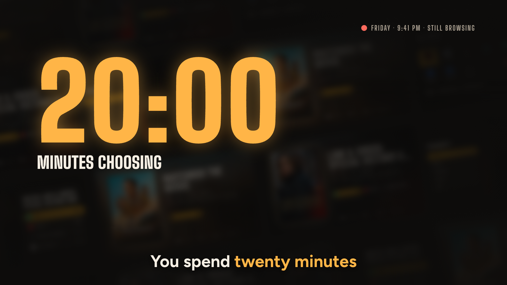
A clock counts to 20:00 over a wall of blurred covers.
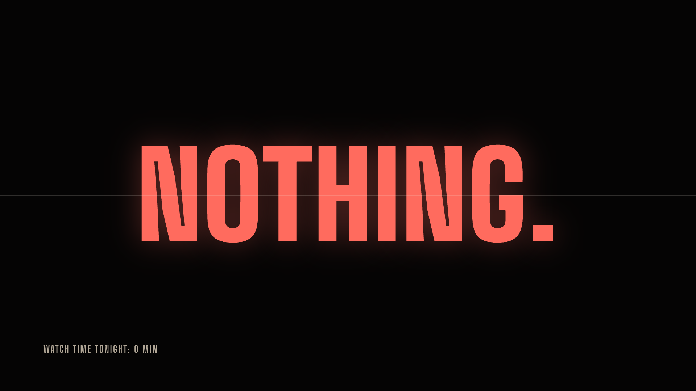
Smash cut to black. NOTHING. in red.
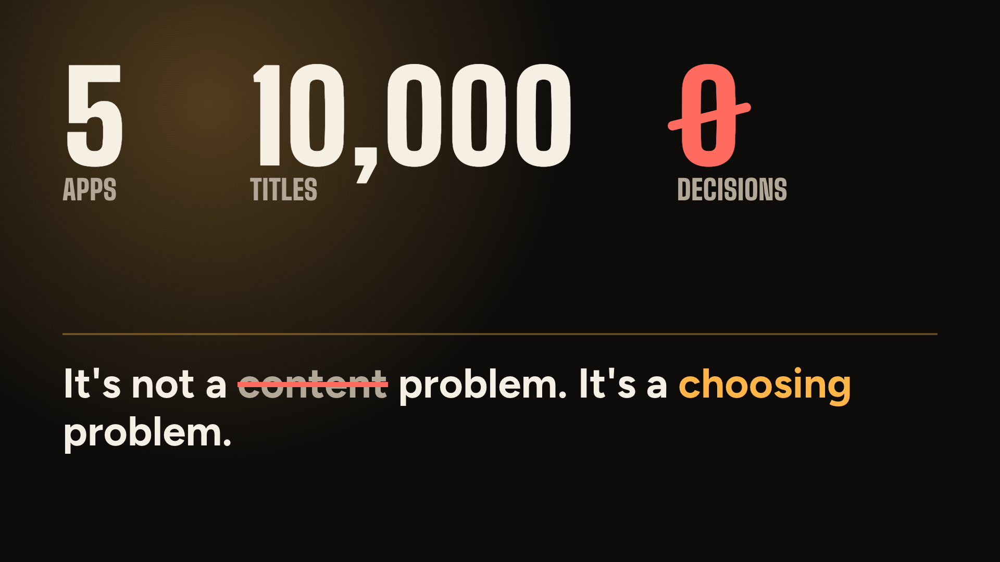
5 apps · 10,000 titles · 0 decisions. 'content' struck, 'choosing' in amber.
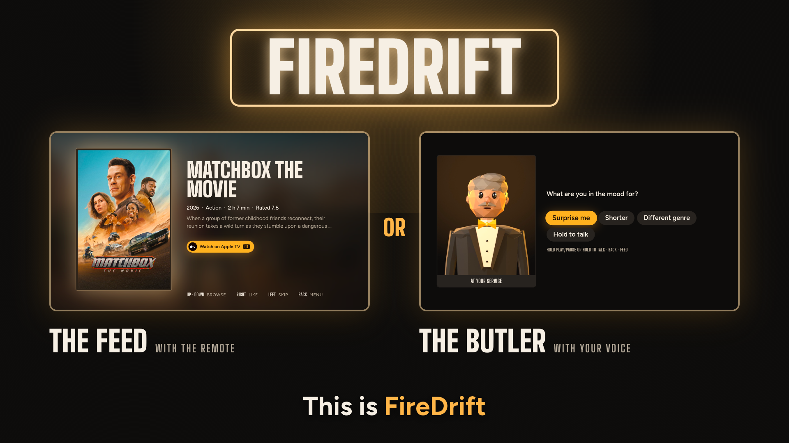
The FIREDRIFT marquee, then the feed and the butler side by side.
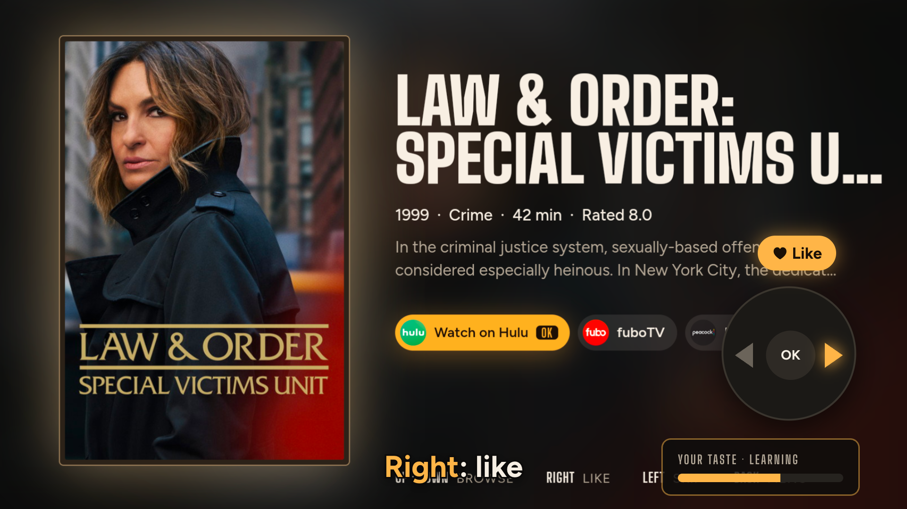
Real feed. The remote lights RIGHT = Like. Taste bar fills.
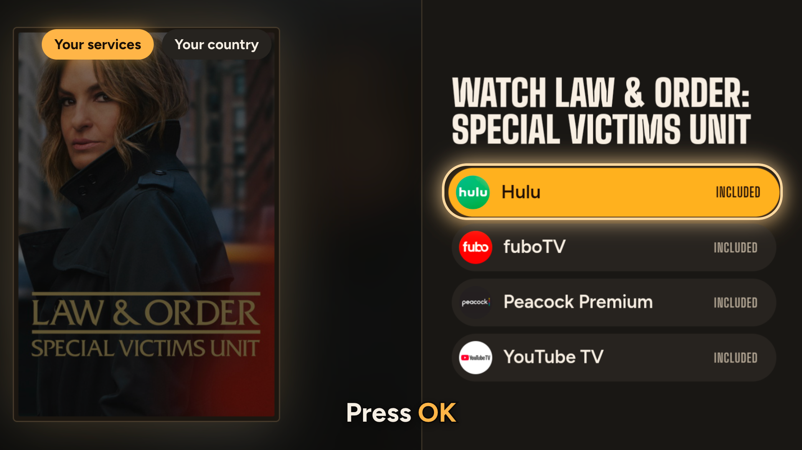
OK opens Watch now. A ring on the service.
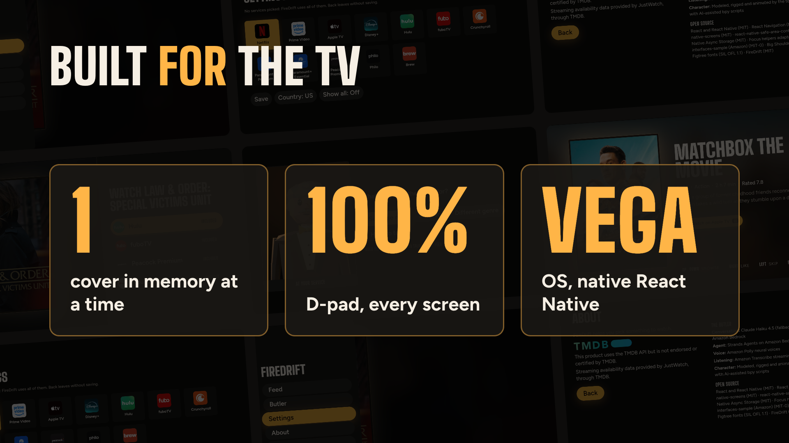
1 cover in memory · 100% D-pad · Vega OS, over every screen.
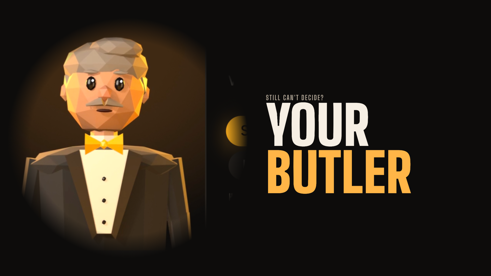
Iris opens on the butler. YOUR BUTLER.
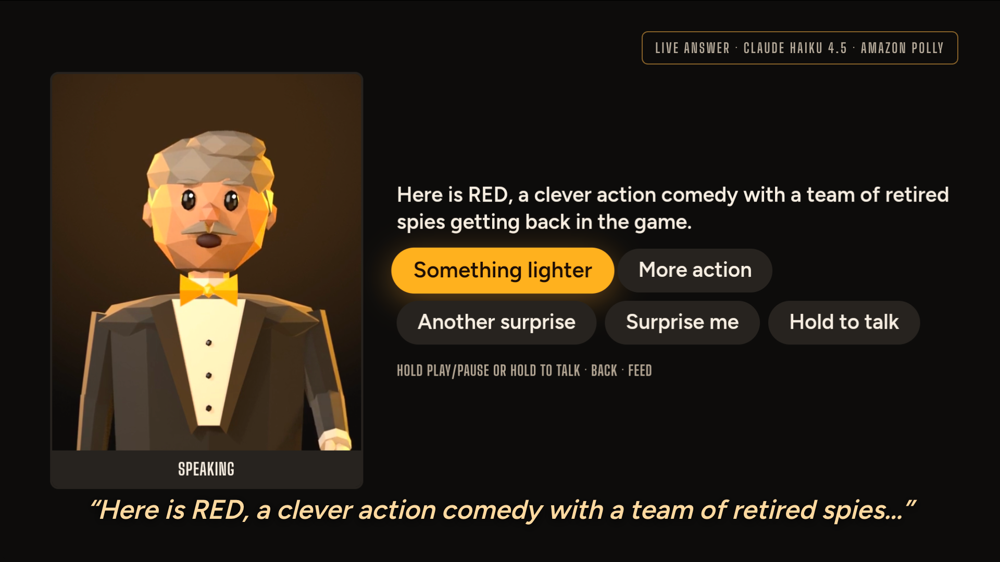
The real answer, with the butler's own Polly voice.
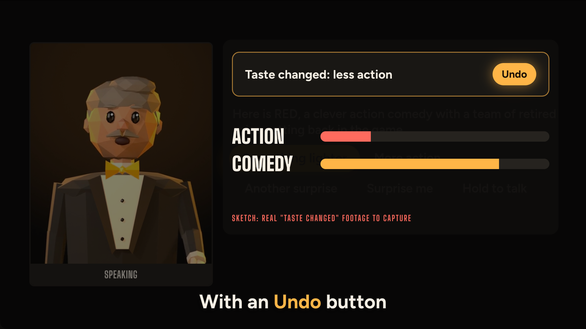
Taste changed + Undo. Action down, comedy up. (Footage still to capture.)
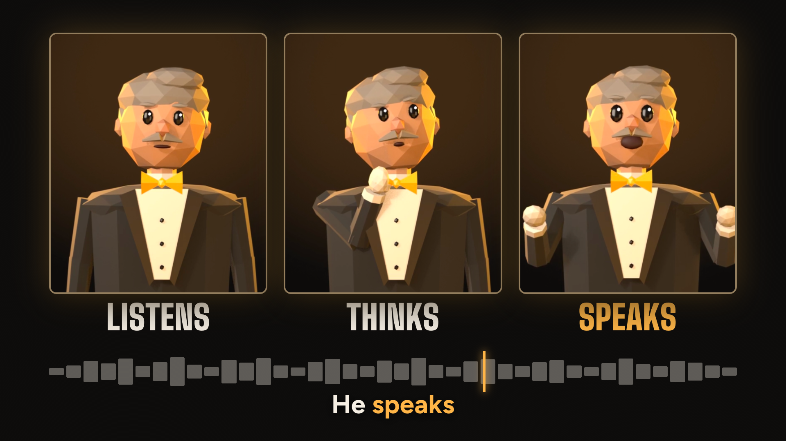
Listens · thinks · speaks. The speech mark that fires the gesture.
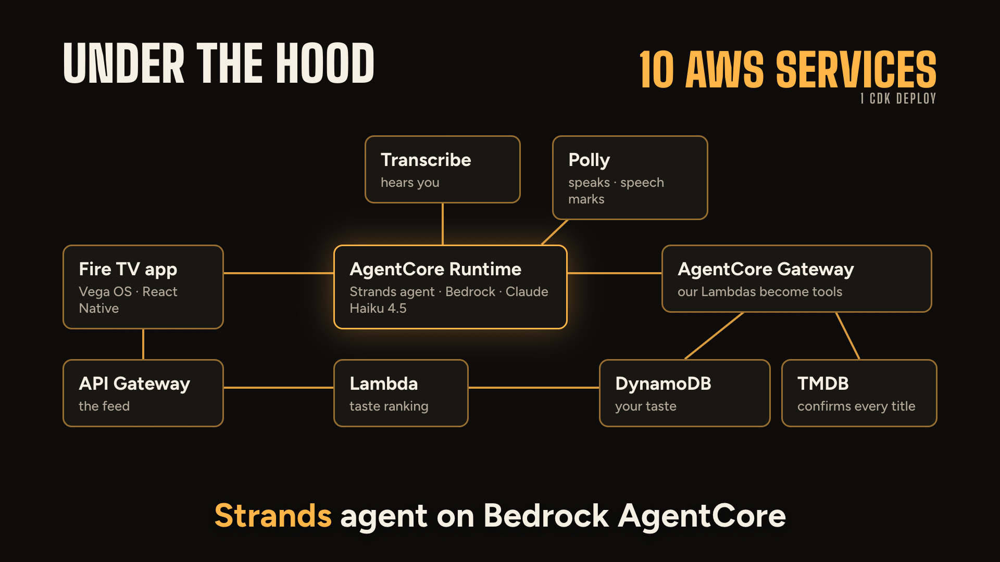
The diagram draws as each service is named. 10 AWS services.
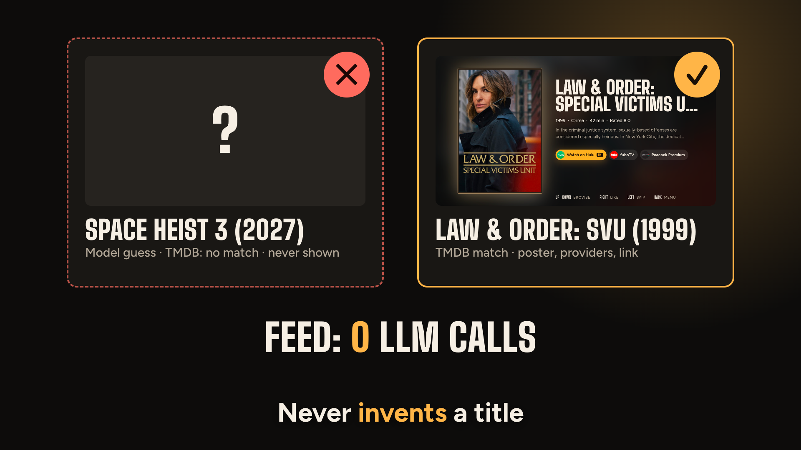
Made-up title rejected, TMDB title confirmed. Feed: 0 LLM calls.
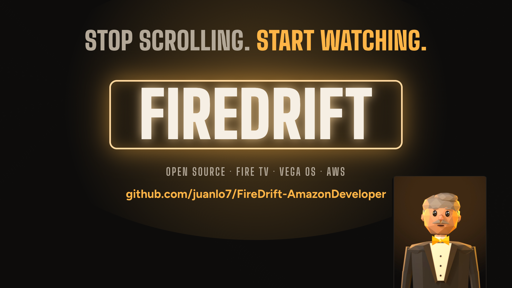
STOP SCROLLING. START WATCHING. The marquee and the GitHub URL.